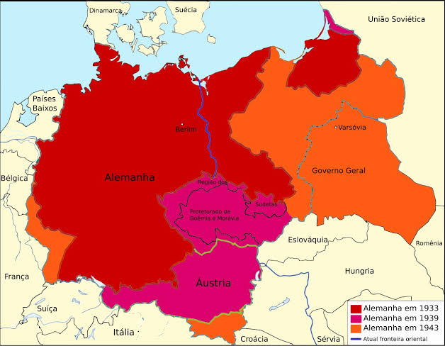
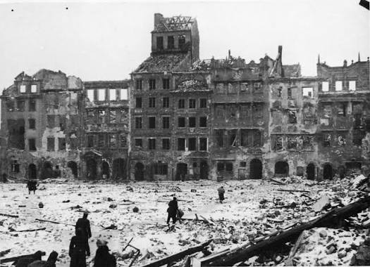

O maior conflito da história contemporânea

A Segunda Guerra Mundial ocorreu entre 1939 e 1945, envolvendo diversas nações em um conflito de escala global. De um lado estavam as potências do Eixo, lideradas por Alemanha, Itália e Japão. Do outro, os Aliados, incluindo Reino Unido, União Soviética, Estados Unidos e China.
O conflito provocou milhões de mortes, destruição de cidades e profundas transformações políticas, econômicas e sociais em todo o mundo.
Principais causas
A guerra foi resultado de diversos fatores históricos, políticos e econômicos, especialmente:
- O Tratado de Versalhes e o ressentimento alemão.
- A ascensão do nazismo e do fascismo.
- O expansionismo territorial de países do Eixo.
- A crise econômica de 1929 e a instabilidade política.
- O fracasso dos esforços diplomáticos para evitar a guerra.
A invasão da Polônia pela Alemanha, em 1º de setembro de 1939, marcou o início da guerra na Europa.
Principais acontecimentos
1939 – Início da guerra
A Alemanha invadiu a Polônia, levando Reino Unido e França a declararem guerra aos alemães.
1941 – Expansão do conflito
A Alemanha invadiu a União Soviética e o Japão atacou Pearl Harbor, levando os Estados Unidos a entrarem na guerra.
1944 – Dia D
Os Aliados desembarcaram na Normandia, na França, iniciando uma grande ofensiva para libertar a Europa Ocidental da ocupação nazista.
1945 – Fim da guerra
A Alemanha se rendeu em maio. Em agosto, os Estados Unidos lançaram bombas atômicas sobre Hiroshima e Nagasaki. O Japão se rendeu em setembro, encerrando a guerra.
Consequências da guerra

O conflito deixou consequências profundas para a humanidade, entre elas:
- Milhões de mortos e deslocados.
- Destruição de cidades e infraestrutura.
- Criação da Organização das Nações Unidas (ONU).
- Divisão da Europa e início da Guerra Fria.
- Julgamentos de líderes nazistas por crimes de guerra.
- Reconstrução econômica de diversos países.